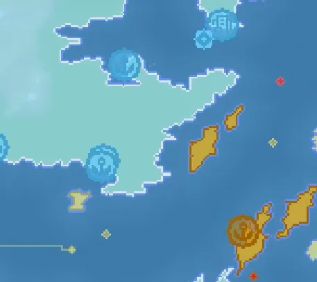

Ports Building Guide for OpenFront.io
What Are Ports?
Ports are one of the most important economic buildings in OpenFront.io. They are round-shaped, economic buildings that can only be built on land near water. Ports serve as the foundation of your nation’s naval economy, spawning trade ships and enabling the construction of warships.

Building Requirements and Placement
Placement Requirements
- Location: Ports must be built near water
- Terrain: Can only be placed on land tiles adjacent to water
- Building Type: Classified as an Economic Building (EB) with a round shape
- Water Access: Must have access to a water source to function properly
Build Process
To build a port:
- Right-click on the map to open the build menu
- Select the yellow wrench icon
- Choose the port from the economic buildings section
- Place it on a land tile that’s adjacent to water
Cost Structure
Ports use a doubling cost system with a maximum cap:
| Order | Cost |
|---|---|
| First Port | 125,000 gold |
| Second Port | 250,000 gold |
| Third Port | 500,000 gold |
| Fourth Port and Beyond | 1,000,000 gold |
The cost doubles for each port you build until reaching the maximum price of 1,000,000 gold.
Core Functions
Trade Ship Generation
Automatic Spawning:
- Ports check every 10 ticks if they should spawn a trade ship
- Spawn rate formula:
round(10 * Math.pow(numberOfPorts, 0.6)) - More ports in the game = higher spawn rates with diminishing returns
- Spawn rate is capped at 50
Trade Ship Characteristics:
- Free to build and don’t count against unit limits
- Have a bright outline with a dark center appearance
- Automatically path to their destination port
Trade Route Selection
Ports follow specific priority rules when selecting trade partners:
- Only trade with other players (never with your own ports)
- Closer ports get double chance of being selected (proximity bonus)
- Allied ports get double chance of being selected
Warship Construction
Ports are required to build warships:
- Warships can only be built if you own at least one port
- When building a warship, it appears at the nearest owned port
- Warships cost: 250k (first), 500k (second), 750k (third), 1M+ (subsequent)
Gold Generation System
Distance-Based Formula
Gold earned from trade is calculated using Manhattan distance:
Formula: Gold = 10,000 + 150 * Math.pow(distance, 1.1)
Where distance is the sum of absolute differences in X and Y coordinates between ports.
Scaling Examples
Close Trade (20 tiles apart):
- Base gold: 10,000
- Distance bonus: 150 × (20^1.1) = 150 × 24.53 = 3,680
- Total: 13,680 gold each
Long Distance Trade (200 tiles apart):
- Base gold: 10,000
- Distance bonus: 150 × (200^1.1) = 150 × 316.23 = 47,434
- Total: 57,434 gold each
This demonstrates superlinear scaling - the 200-tile route is 10x farther but generates 4.2x more gold, making long-distance trade extremely profitable.
Strategic Considerations
Optimal Placement
- Spread ports across maximum distances for higher trade profits
- Coastal control: Secure long coastlines to maximize port placement options
- Island hopping: Establish ports on distant islands for exponential trade gains
- River access: Inland areas with river access can still build ports
Naval Defense
- Warship protection: Build warships to defend trade routes from enemy piracy
- Trade interception: Use warships to capture enemy trade ships
- Strategic positioning: Place ports in defensible locations to prevent enemy capture
Economic Optimization
- Trade maximization: Focus on building ports before other expensive structures
- Alliance coordination: Ally with distant players for maximum trade profit
- Port quantity: More ports = more trade ships = exponential gold growth
Interactions with Other Systems
Naval Combat
- Warship spawning: All warships originate from ports
- Trade protection: Warships can defend trade ships from piracy
- Naval supremacy: Control of ports = control of naval warfare
Alliance Benefits
- Allied trading: Allied ports receive double selection priority
- Trade safety: Allied warships won’t capture your trade ships
- Mutual benefit: Both source and destination port owners receive full gold amounts
Defensive Vulnerabilities
- High-value targets: Ports are expensive and attractive targets for nuclear strikes
- Coastal exposure: Ports are vulnerable to naval attacks and amphibious assaults
- Economic disruption: Losing ports severely impacts trade income
Advanced Strategies
Port Maximization
Advanced players often employ “port maxing” strategies:
- Build as many ports as possible across maximum distances
- Prioritize port construction over other buildings
- Create extensive trade networks for exponential gold generation
Trade Route Optimization
- Distance optimization: Establish ports at maximum possible distances
- Network effects: More ports create more potential trade routes
- Geographic advantage: Utilize map features like islands and continents for spacing
Naval Empire Building
- Maritime focus: Build naval-centric empires around port control
- Trade dominance: Use superior trade income to fund military expansion
- Piracy operations: Capture enemy trade for additional income
Updated Mechanics
Recent updates have enhanced port functionality:
- Betrayal consequences: Bombing allies stops trading for 5 minutes
- Distance calculation: Gold now calculated by actual ship travel distance rather than straight-line distance
- River restrictions: Warships can’t target trade ships within rivers
- Allied protection: Warships prevented from pirating trade ships destined for allied ports
Ports represent the cornerstone of economic strategy in OpenFront.io, enabling massive gold generation through trade while providing essential naval capabilities. Mastering port placement, protection, and optimization is crucial for achieving economic dominance and ultimate victory in the game.